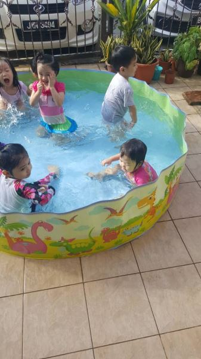
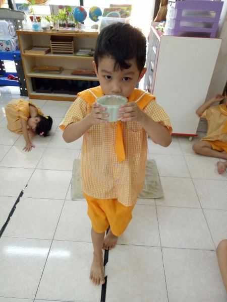
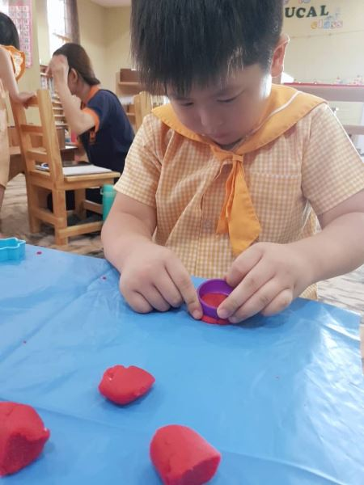
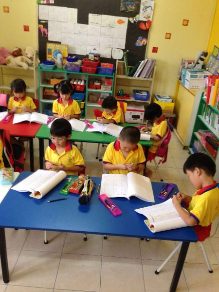
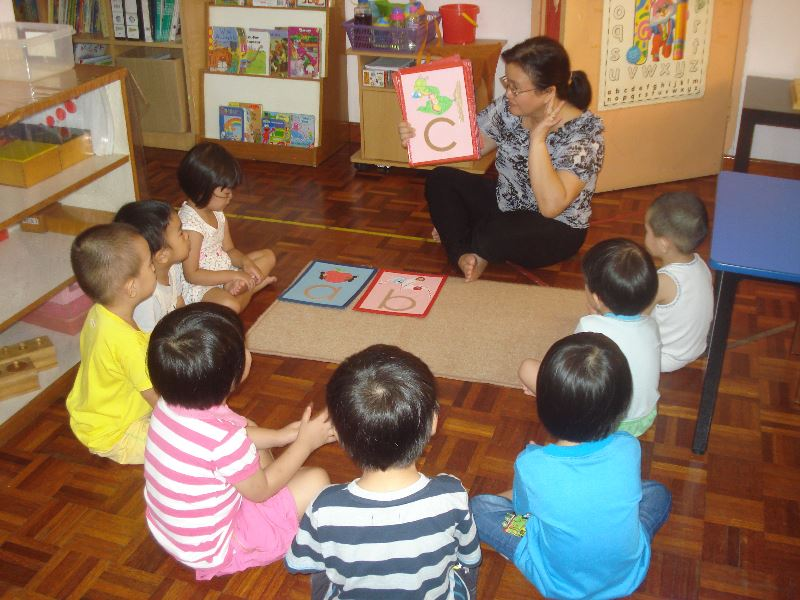
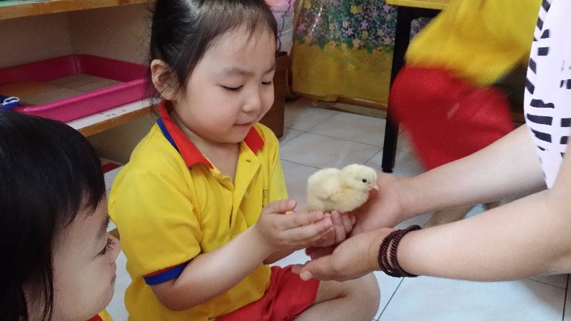
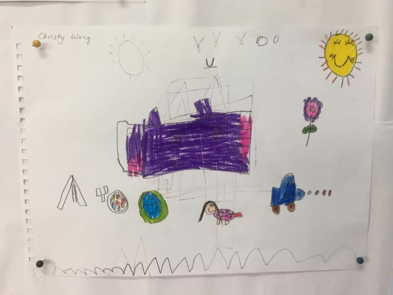
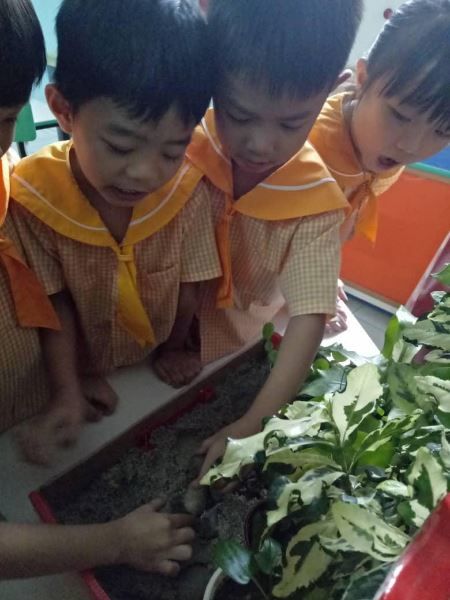

One cube at a time.Montessori nursery, kindergarten and full-day care in Kota Kemuning, Shah Alam
For children from 18 months to 6 years. Our Montessori teachers prepare the room; your child does the building, through every sense and at their own pace.
At PAC, children learn touse every sense.respect each other.guide themselves.create freely.use every sense, respect each other, guide themselves and create freely.
Self-construction through all the senses, and the quiet joy of finishing a task by themselves.
Step by step, children grow into thoughtful, sociable friends who respect their peers.
A Montessori teacher and a prepared environment, so discipline grows from within.
Freedom to play with symbols, colours and sounds for self-expression.
“Child’s whole personality development.”
Every child is welcome here. PAC is a full-day Montessori and care centre that embraces inclusion, with technology-aided classrooms and teachers who guide rather than lecture.
Which room is your child ready for?
Slide along the number rod to your child’s age.
1½22½33½44½55½6
2½years

Montessori Nursery
Taska for 18 months to 4 years
A calm first classroom. Children pour, sort, stack and sing, building concentration and independence through practical life and sensorial work, with early phonics when they’re ready.
Practical life and sensorial work
Early phonics, songs and stories
Water play and music gym
Full-day or half-day care
Every room comes with care that fits your day
Full-day childcare6:30 am to 7 pm, Monday to Friday
Day care sessionsMorning or afternoon
TransportArranged on request
Seven areas. One whole child.
Our Montessori curriculum covers every part of growing up, woven through the week with projects, music gym, e-learning, science experiments and excursions.
keep scrolling, the shelf slides along

Practical Life
Pouring, carrying, buttoning, tidying up. Children learn to manage themselves and care for the room around them.
Seen at PAC walking on the line, preparing snacks, making sandwich rolls

Sensorial
Learning through the senses. Sharper observation, finer comparison, and the pleasure of noticing small differences.
Seen at PAC sensorial weeks, nursery water play

Mathematics
Quantity before symbol. Concepts arrive step by step, through materials children can hold, count and build.
Seen at PAC decimals, multiplication and division boards, number-line sums

Literacy
A graded phonics approach: sounds and blending, then phonograms and digraphs, then grammar and building sentences.
Seen at PAC nursery phonics, Scholastic World of English enrichment

Culture & Science
Real objects, themed projects and experiments that connect children to their surroundings and the wider world.
Seen at PAC hatching chicks, butterfly life cycles, a prehistoric timeline

Creative Arts
Music and movement, art and craft, storytelling, writing and role play, all as ways to express themselves.
Seen at PAC free drawing, music and movement, swimming and gymnastics

Bridging
For six-year-olds: ready for Primary One, aligned with the National Preschool Curriculum.
Seen at PAC rainforest science, a visit to the Bomba station